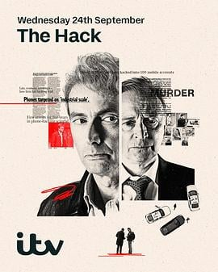

7.6
窃听黑幕
The Hack
2025
美国
评分 7.6
导演:
刘易斯·阿诺德
演员:
大卫·田纳特 / 罗伯特·卡莱尔 / 托比·琼斯 / 露丝·莱斯利 / 多格雷·斯科特
类型:
剧情,犯罪
剧情简介
从伦敦霓虹闪烁的新闻编辑部到南伦敦酒馆后的暗黑停车场，记者尼克·戴维斯（大卫·田纳特 饰）用键盘敲出一条条声音，最终揭开英国最臭名昭著的电话窃听丑闻。他面对的不只是新闻稿件，更是沉默承诺、权力腐败与媒体自省。 与此同时，警察高层大卫·库克（罗伯特·卡莱尔 饰）在一桩1987年未破私家侦探谋杀案中步步为营，他在案件的迷雾中发现：犯罪不仅发生在街角，也潜伏在权贵之间。两条主线交错推进，在阴影中映出“新闻的自由”与“权力的代价”的困境。 剧集在媒体办公室、法庭走廊、地下停车场与电视直播之间跳跃：镜头里是录音设备、黑布帐篷、秘密会议，是被窃听者的悔恨、记者的疲惫、公众的视线错位。故事没有传统的英雄救世，而展现一个记者怎样用一封文件、一通匿名电话震动体系；一个警探怎样在暗巷中听见贵人低语。这个系列像一份报纸拆开的真相拼贴：污点、利益、道德、新闻，这些碎片在夜晚闪光，观众跟随着尼克敲响键盘，走进一个“背后有人听”的世界。